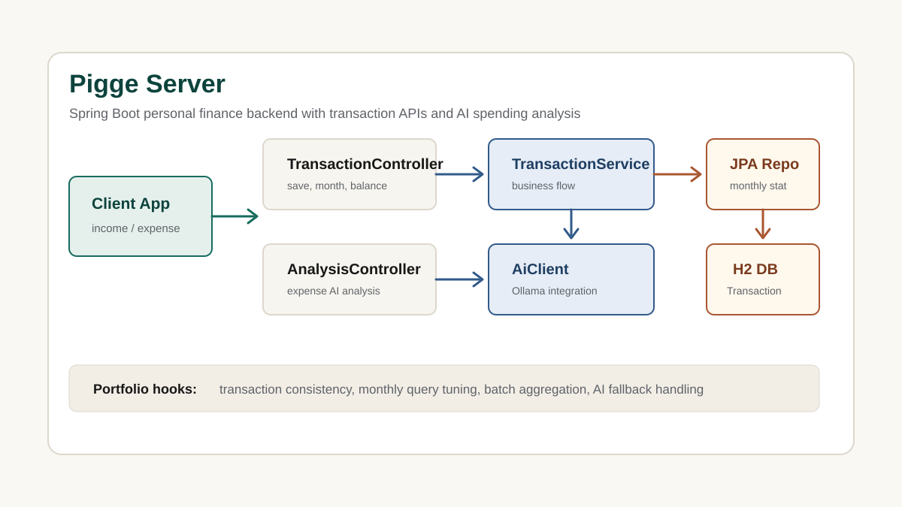

Pigge Server
사용자별 수입·지출 거래를 저장하고 월별 조회, 잔액 계산, AI 소비 요약까지 제공하는 개인 가계부 백엔드 API입니다.

거래 데이터 모델
사용자 이메일, 거래 유형, 금액, 카테고리, 거래 날짜 중심의 거래 Entity 구성
잔액 계산
거래 유형별 합계를 집계해 사용자별 총 잔액을 계산하는 로직 구현
월별 집계
연·월 단위로 거래를 필터링해 특정 기간의 수입·지출만 조회하는 API 구현
정합성 검증
거래 저장, 사용자별 잔액 계산, 월별 필터링 로직을 Service 테스트로 검증
AI 연동
월별 집계 데이터를 AI Client로 넘겨 소비 요약을 생성하고, mock 기반으로 흐름 검증
개선 예정
동시 거래 처리, 트랜잭션 정합성, Bean Validation, 공통 예외 응답 보강
3개 테스트(거래 저장·잔액 계산, 월별 필터링, AI 요약 mock 흐름)를
gradlew test로 직접 실행해 BUILD SUCCESSFUL을 확인했습니다.